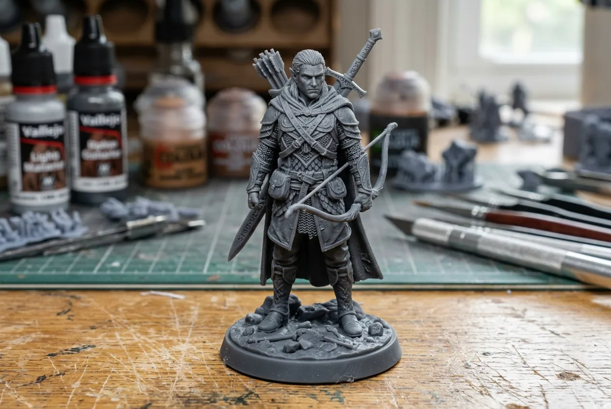
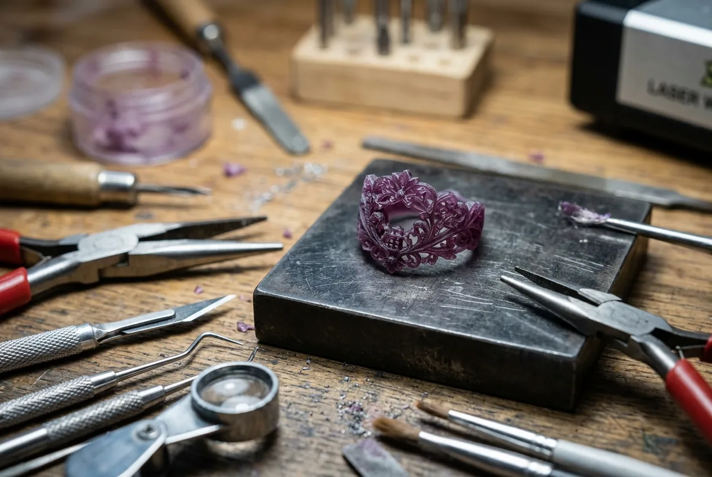
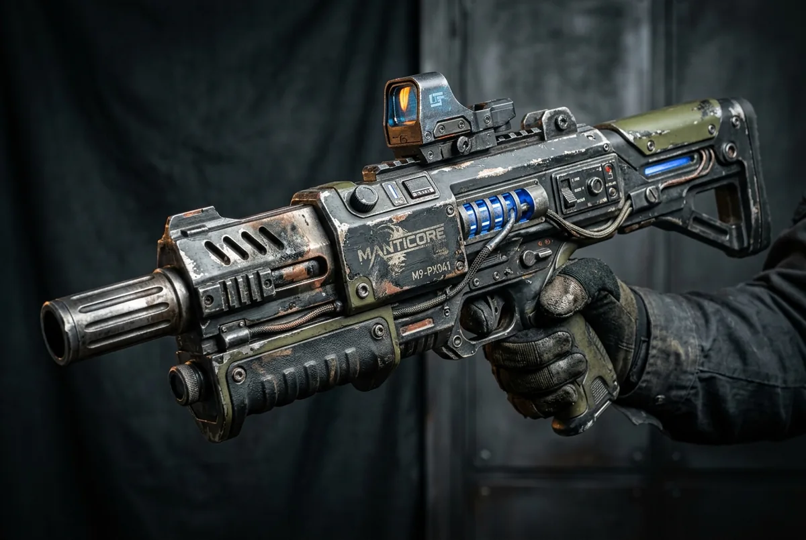
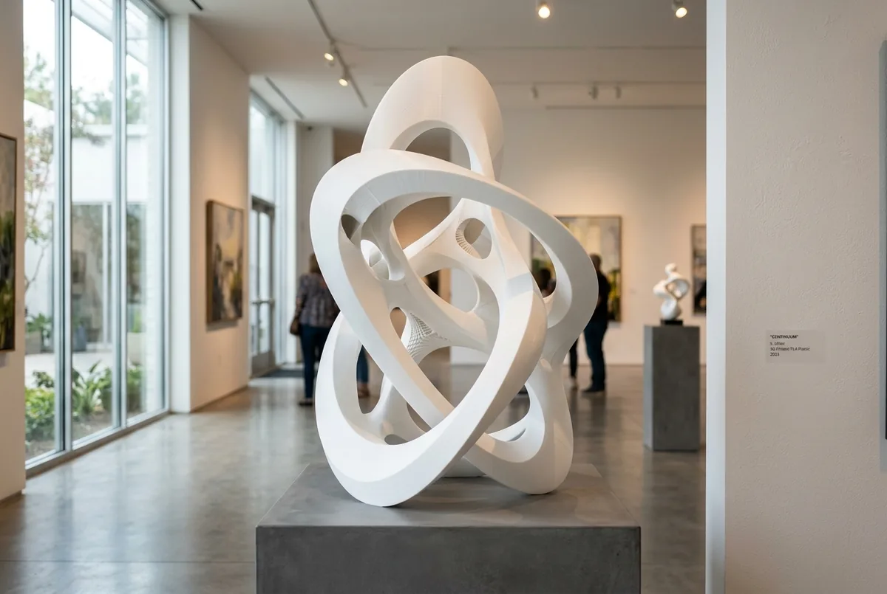
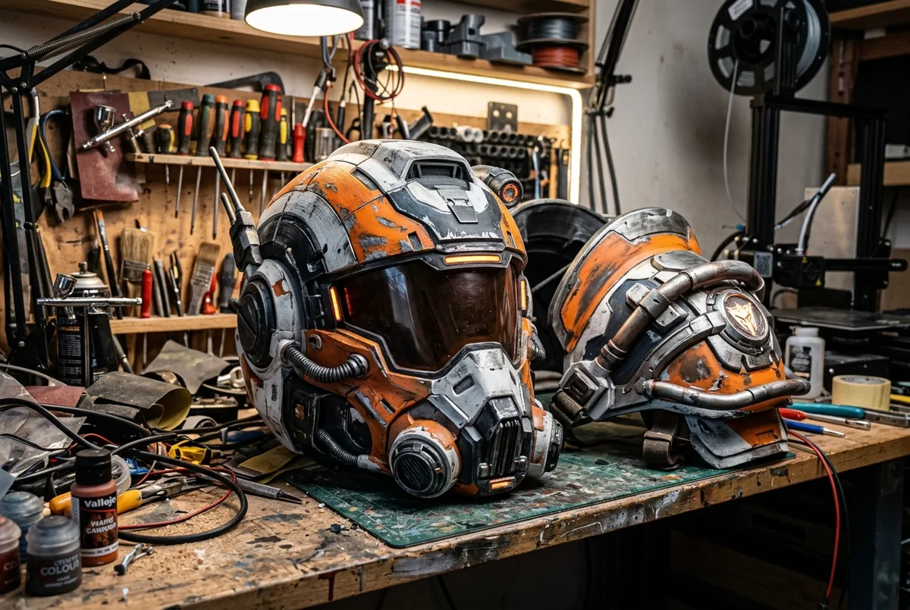

01
Have an idea?
Bring a sketch, an existing model or a problem to solve. Together, define what the first version needs to prove.
Explore this stageBuild your next product faster. Prototype, test and refine custom parts with professional 3D printing and practical design support.
Your first print
is a starting point.

Bring a sketch, an existing model or a problem to solve. Together, define what the first version needs to prove.
Explore this stage
Choose a process and material for the first physical version. Start simple and focus on the question you need answered.
Explore this stage
Check the fit, ergonomics and function. Try it with real components and collect practical feedback.
Explore this stage
Update the geometry, tune the finish and test the next revision without committing to traditional tooling.
Explore this stage
Approve a representative sample, then move into a consistent small production batch.
Explore this stageCustom manufacturing examples for designers, startups and creators.
Explore shape, texture and interaction with a fast physical version.
Explore applicationPrototype wearable details and presentation pieces around your brief.
Explore applicationCompare alternative forms before choosing a production direction.
Explore applicationThree useful starting points: rigid concepts, flexible details and smooth presentation models.
A practical starting point for concept models, visual checks and early design iterations.
A flexible material for protective covers, compliant grips and parts that need to bend.
Fine details and smooth surfaces for presentation models, miniatures and visual prototypes.
Product studies for creators who need to see, hold and improve the idea.
Explore surface, proportion and touch before choosing a final direction.

Test texture, scale and presentation with a physical model in hand.

Iterate the fit and finish of a distinctive object before making the final version.
Start with what matters most to your part. We’ll point you toward a sensible starting option.
Share a model and your requirements.
Match the process to the purpose.
Agree the details before production.
Print, clean and finish your parts.
Inspect against agreed requirements.
Ready for your next iteration.
Put a model in someone’s hands. Learn how they hold it, use it and understand it.
Test with the real electronics, fasteners and interfaces. Keep a record of what needs to change.
Agree the sample and acceptance criteria before repeating the design in a batch.
From a single prototype to your next production run.